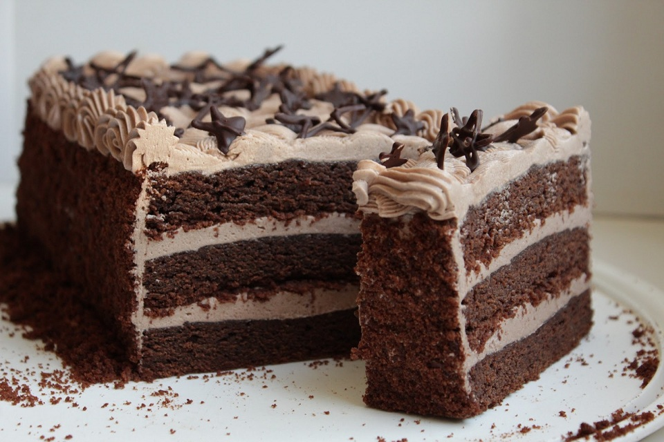

Супи
-
Борщ

Інгредієнти:
- Свинина - 500 г
- Свіжа капуста - 500 г
- Буряк - 1 шт.
- Цибуля - 2 шт.
- Морква - 1 шт.
- Картопля - 4 шт.
- Томатна паста - 2 ст. л.
- Часник - 3 зубчики
- Сіль, перець, байкал - за смаком
Приготування:
- Підготуйте інгредієнти.
- На каструлі розігрійте олію і підсмажте на ній м'ясо.
- Додайте нарізані овочі та томатну пасту і пасуйте декілька хвилин.
- Залейте водою, додайте приправи і варіть до м'якості капусти та овочів.
- Подавайте з кислою вершков та зеленню.
-
Грибний крем-суп

Інгредієнти:
- Шампіньйони - 300 г
- Цибуля - 1 шт.
- Часник - 2 зубчики
- Сливки - 200 мл
- Вода - 500 мл
- Олива - 2 ст. л.
- Сіль, перець - за смаком
Приготування:
- Нарізати шампіньйони та цибулю і підсмажити на олії.
- Додати нарізаний часник і обсмажити ще декілька хвилин.
- Залити водою та довести до кипіння.
- Помішувати декілька хвилин, доки шампіньйони стануть м'якими.
- Збити сливки до густої консистенції і додати до супу.
- Загостити суп, якщо потрібно, та за смаком додати сіль та перець.
- Подавати гарячим з крутонами або хлібом.
Другі страви
-
Стейк з лосося

Інгредієнти:
- Філе лосося - 2 шт.
- Олива - 2 ст. л.
- Сіль, перець - за смаком
Приготування:
- Розігрійте олію на сковороді.
- Посипте філе лосося сіллю та перцем з обох сторін.
- Положіть філе на сковороду і обсмажуйте з обох сторін по 3-4 хвилини.
- Подавайте з овочами та картоплею на гарнір.
-
Курка в сливковому соусі
Інгредієнти:
- Філе курки - 4 шт.
- Цибуля - 1 шт.
- Часник - 3 зубчики
- Сливки - 200 мл
- Сливи - 5 шт.
- Олива - 2 ст. л.
- Сіль, перець - за смаком
Приготування:
- Нарізати курячі філе на шматочки та підсмажити на олії до золотисто-коричневого кольору.
- Додати нарізану цибулю та часник та смажити декілька хвилин.
- Додати нарізані сливи та сливки та довести до кипіння.
- Зменшити вогонь та покрити кришкою.
- Готувати 20-25 хвилин, поки курка стане м'якою та соус не згустнеться.
- Додати сіль та перець за смаком.
- Подавати гарячим з рисом або картоплею на гарнір.
Десерти
-
Чізкейк з полуницею

Інгредієнти:
- Крем-сир - 450 г
- Цукор - 1/2 склянки
- Яйця - 3 шт.
- Ванільний екстракт - 1 ч. л.
- Полуниця - 1 склянка
- Хлібні крихти - 1 склянка
- Масло - 1/4 склянки
Приготування:
- Розігрійте духовку до 180 градусів.
- Змішайте разом хлібні крихти та розтоплене масло та притисніть цю суміш до дна форми для печіння чізкейка.
- У великій мисці збити крем-сир з цукром до однорідної маси.
- Додайте яйця по одному, постійно збиваючи міксером на середніх швидкостях.
- Додайте ванільний екстракт та знову збивайте, доки маса не стане повітряною.
- Злегка перемішайте полуницю в мисці та розлейте отриману суміш на підготовлену форму для печіння.
- Печіть у попередньо розігрітій духовці протягом 45-50 хвилин, доки краї чізкейка не зійдуться та середина буде трохи дрібнуватою.
- Відключіть духовку та залиште чізкейк у ній ще на 10-15 хвилин, поки він добре охолоне.
- Приберіть з духовки та залиште у кімнатній температурі ще на 30-60 хвилин до подачі.
-
Шоколадний торт
Інгредієнти:
- Молоко - 1 склянка
- Оцет - 1 ч. л.
- Мука - 1 склянка
- Какао-порошок - 1/2 склянки
- Сода - 1 ч. л.
- Сіль - 1/2 ч. л.
- Цукор - 1 склянка
- Олія - 1/2 склянки
- Яйця - 2 шт.
- Ванільний екстракт - 1 ч. л.
- Гаряча вода - 1 склянка
Приготування:
- Підготуйте форму для печіння та покрийте її пергаментним папером.
- У великій мисці змішайте молоко та оцет, залиште на 5 хвилин.
- У другій мисці змішайте муку, какао-порошок, соду та сіль.
- У третій мисці збийте цукор та олію до однорідної маси.
- Додайте яйця та ванільний екстракт та збийте, доки маса не стане повітряною.
- Додайте сухі інгредієнти та молочну суміш по-черзі до маси з яйцями, збиваючи на низьких швидкостях міксера.
- Додайте гарячу воду та перемішайте до однорідної маси.
- Розлейте отриману суміш у підготовлену форму для печіння.
- Печіть у попередньо розігрітій духовці протягом 30-35 хвилин, доки торт не стане м'яким та пухким.
- Відключіть духовку та залиште торт у ній ще на 10-15 хвилин, поки він добре охолоне.
- Приберіть з духовки та залиште у кімнатній температурі ще на 30-60 хвилин до подачі.